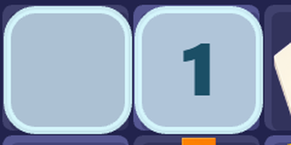
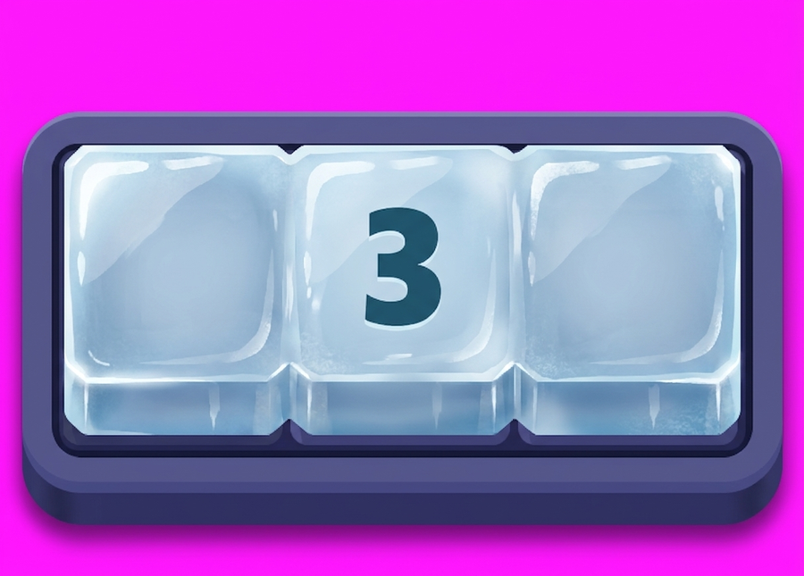
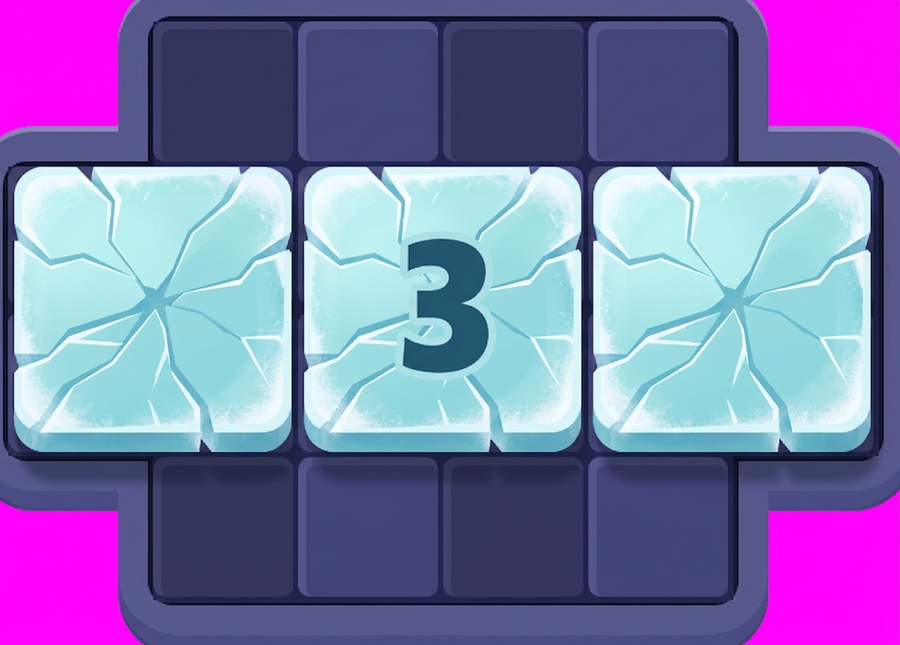
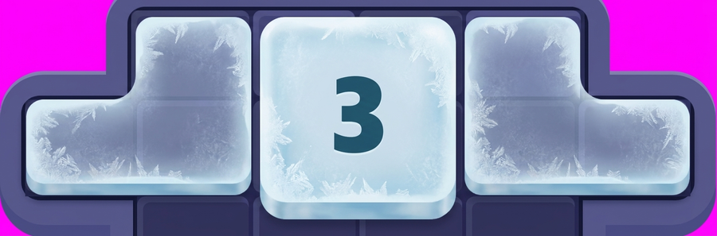

Băng hiện tại chỉ là một hình bo góc phẳng cộng một nét viền — không có khối,
không có chất, nên nó đọc ra ô nhựa xám nhạt chứ không ra băng. Bốn bản dưới là bản vẽ mẫu
gen bằng AI, lấy chính ảnh chụp board Lv40 làm tham chiếu phong cách; duyệt xong tôi dựng lại bằng
code trong game (băng vẽ bằng Graphics chứ không phải sprite, nên phải tả lại chứ không dán ảnh).

Đang có trong game — nền xanh xám alpha .78, viền trắng 3px, hết.
Nó nhạt hơn cả ô board trống nên mắt đọc thành “ô bị mờ”, không đọc thành “ô bị chặn”.
A · KHỐI ĐẶCBăng là một khối dày nhô hẳn lên khỏi mặt board: cạnh vát bắt sáng ở trên-trái, lộ thành đứng ở dưới-phải, vệt bóng dọc thân. Cùng ngôn ngữ hình với khay và chốt — cũng là khối nhựa dày, chỉ khác chất.

B · NỨTXanh lơ nhạt, có vết nứt trắng chạy xuyên từng ô như kính đông sắp vỡ. Đọc ra “sắp tan” ngay cả khi chưa nhìn con số.

C · PHỦ SƯƠNGMờ đục như cửa kính tủ lạnh, tinh thể sương bò vào từ mép, giữa ô còn thấy mờ mờ nền board. Nhẹ nhất, ít che board nhất.

D · TINH THỂGhép từ các mặt cắt góc cạnh, mỗi mặt bắt sáng một kiểu như đá quý mài. Nổi bật nhất nhưng cũng ồn nhất.